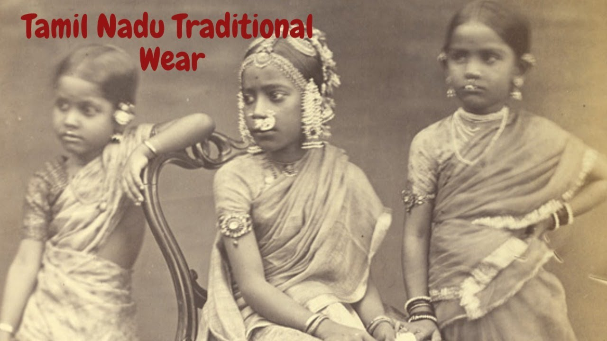
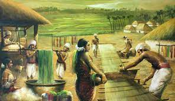

- நெசவு தொழில்:
தோராயமாக கிமு 3 ஆம் நூற்றாண்டு முதல் கிபி 3 ஆம் நூற்றாண்டு வரையிலான தமிழ்நாட்டின் சங்க காலத்தில்,
நெசவு என்பது பிராந்தியத்தின் பொருளாதார,
கலாச்சார மற்றும் சமூக கட்டமைப்பில்
ஒரு முக்கிய பங்கைக் கொண்டிருந்த மிகவும் குறிப்பிடத்தக்க தொழிலாக இருந்தது. சங்க காலத்தில் நெசவு செய்த சில முக்கிய அம்சங்கள் இங்கே
- பொருளாதார முக்கியத்துவம்:
- பண்டைய தமிழ்நாட்டில் நெசவு ஒரு முக்கிய பொருளாதார நடவடிக்கையாக இருந்தது. இது
பலருக்கு வாழ்வாதாரமாக மட்டுமல்லாமல்
, பிராந்திய பொருளாதாரத்திற்கும் குறிப்பிடத்தக்க பங்களிப்பை வழங்கியது.
- ஜவுளி விற்பனை மற்றும் ஏற்றுமதி, குறிப்பாக பருத்தி துணிகள், பிராந்தியத்தின் செழிப்புக்கு பங்களித்தது.
- பருத்தி மற்றும் பட்டு நெசவு:
- சங்க காலத்தில் நெசவுக்குப் பயன்படுத்தப்பட்ட
முதன்மையான இழைகள் பருத்தி மற்றும் பட்டு. பருத்தி துணிகள் குறிப்பாக பிரபலமாக இருந்தன.
-
நெசவாளர்கள் பல்வேறு வகையான தறிகள் மற்றும் நுட்பங்களைப் பயன்படுத்தி, மெல்லிய மஸ்லின் மற்றும் பட்டு ஆடைகள் உட்பட பரந்த அளவிலான துணிகளை
உருவாக்கினர்.
- ஜவுளி வர்த்தகம்:
- தென்கிழக்கு ஆசியா மற்றும் ரோமானியப் பேரரசு உள்ளிட்ட பிற பகுதிகளுடன் தமிழ்நாடு விரிவான வணிகத்
தொடர்புகளைக் கொண்டிருந்தது.
-
ஜவுளி, குறிப்பாக நுண்ணிய பருத்தி, இந்த வர்த்தக நெட்வொர்க்குகளில் தேடப்படும் பொருட்களில் ஒன்றாகும்.
- நெசவு சமூகங்கள்:
- நெசவாளர்கள் தனித்துவமான சமூகங்கள் மற்றும் கில்டுகளை உருவாக்கினர், மேலும் அவர்களின் நிபுணத்துவம் மற்றும் நுட்பங்கள்
பெரும்பாலும் தலைமுறைகளுக்கு அனுப்பப்பட்டன.
-
அந்தக் காலகட்டத்தின் சமூக அமைப்பில் அவர்கள் முக்கியப் பங்காற்றினர்.
- சங்கக் கவிதையும் நெசவும்:
- நெசவு மற்றும் ஜவுளிகள் சங்கக் கவிதைகளில் அடிக்கடி குறிப்பிடப்பட்டு,
அவற்றின் கலாச்சார முக்கியத்துவத்தை விளக்குகிறது.
-
கவிஞர்கள் தங்கள் படைப்புகளில் பல்வேறு உணர்ச்சிகளையும் கருப்பொருள்களையும் வெளிப்படுத்த நெசவு உருவகங்களையும்
உருவகங்களையும் பயன்படுத்தினர்.
- கலை மற்றும் அழகியல் மதிப்பு:
- நெசவாளர்கள் கைவினைஞர்களாகக் கருதப்பட்டனர், மேலும் அவர்களின் பணி அதன் கலை மதிப்பிற்காக கொண்டாடப்பட்டது. நேர்த்தியான
கைவினைத்திறன் சங்க ஜவுளிகளின் அடையாளமாக இருந்தது.
நுணுக்கமான வடிவங்கள், வடிவமைப்புகள் மற்றும் மையக்கருத்துகளின் பயன்பாடு ஜவுளிகளின் அழகியல் முறையீட்டில் சேர்க்கப்பட்டது.
- புதுமை மற்றும் நுட்பங்கள்:
- சங்க காலத்தில் நெசவாளர்கள் தங்கள் புதுமையான நுட்பங்கள் மற்றும் வடிவமைப்பு கூறுகளுக்காக அறியப்பட்டனர்.
- தனித்துவமான மற்றும் அழகான ஜவுளிகளை உருவாக்க அவர்கள் டை-டை, ரெசிஸ்ட்-டை மற்றும் பிற முறைகளைப் பயன்படுத்தினர்.
- கலாச்சார அடையாளம்:
-
நெசவு தமிழ் கலாச்சாரம் மற்றும் அடையாளத்தின் ஒருங்கிணைந்த பகுதியாக இருந்தது. பாரம்பரிய ஆடைகள் மற்றும் ஜவுளிகள் கலாச்சார மற்றும் மத சடங்குகளில் தொடர்ந்து பங்கு வகிக்கின்றன.

